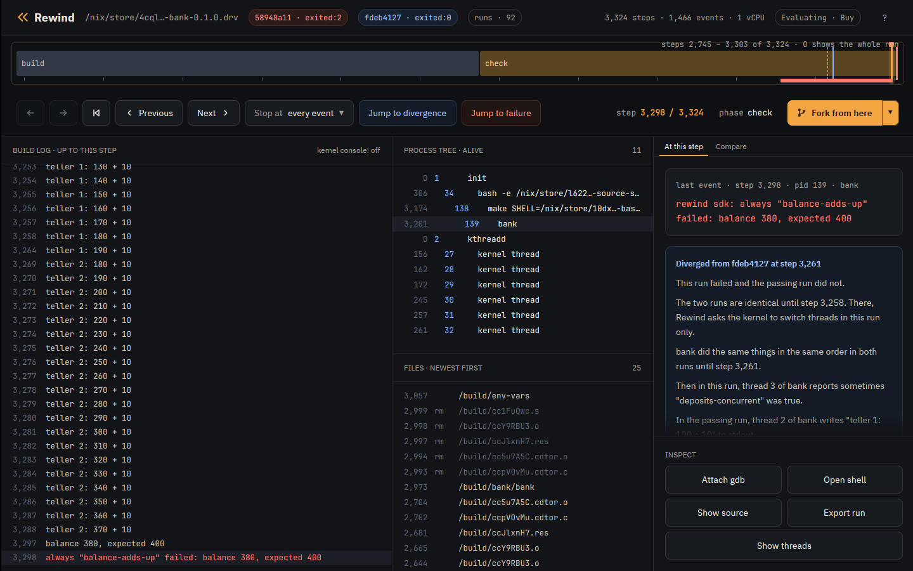
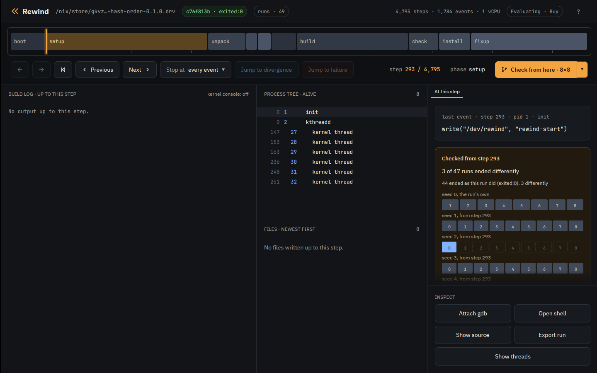

Tutorial · Properties
Tutorial: property-based testing
By default rewind check judges a run by how it ends. It runs the job under many
thread schedules and calls a schedule failing when it ends differently from schedule 0, the
run with nothing perturbed: another exit status, a signal, or an output with another hash. A
test that exits 0 on schedule 0 and 1 on schedule 5 is the bug the
Nix tutorial finds.
You can also state properties that every run must have, and check judges each schedule by them. A property can be one of Rewind's built-in checks on the files and processes a run touched, an assertion the program makes about itself with the Rewind SDK, or a script of your own. Check can also vary the program's randomness with seeds, as well as its schedule.
The examples are three small programs from
examples:
config-reload, bank and hash-order. Install Rewind as
the Nix tutorial does.
Catch a bug on the first run
config-reload rewrites its config file in place: it truncates the file, then
writes the two lines one at a time. Another process rereads the file meanwhile. The
program's own test fails only when a read lands between the truncate and the last write,
which few schedules do.
The atomic-replace property fails a run that truncates a file in place, where
it should write a new file and rename it over the old one. The property looks at what the
program did, not at how the run ended, so schedule 0 already violates it and check finds
the bug with no search:
$ rewind check --epoch 1790985600 --schedules 8 --property 'atomic-replace=*.conf' github:fzakaria/rewindvm#config-reload
rewind: packing 62 store paths for config-reload-0.1.0
schedule 0: exited:0 4563 steps f7b1c7741aba run d83eda44b1eee197 violates atomic-replace
atomic-replace: step 3238: process 139 (config) truncated /build/config-reload/app.conf in place, which the run wrote at step 3233; a reader can see it empty or half written
...
schedule 8: exited:2 3778 steps run 5ed6470d27365add violates atomic-replace
every schedule violated a property, as schedule 0 did
open it at the step: rewind open d83eda44b1eee197 3238
atomic-replace flags the unsafe write whether or not a reader saw the
half-written file. no-read-while-written flags the reader: it fails a run in
which a process opens the file for reading while another process has it open for writing.
Only some schedules do that, so check searches for one and narrows it to the step that
decides it:
$ rewind check --epoch 1790985600 --property 'no-read-while-written=*.conf' github:fzakaria/rewindvm#config-reload | grep -E 'decides it|failing run'
step 3274 decides it: a reschedule there makes the run violate no-read-while-written
failing run violates no-read-while-written: step 3285: process 140 (config) opened /build/config-reload/app.conf for reading while process 139 (config), which opened it for writing at step 3274, had not closed it
--property replaces the default, and you can repeat it to judge runs by
several properties. Rewind includes these:
| Property | A run violates it when |
|---|---|
same-outcome |
it ends differently from schedule 0; the default |
exit-zero |
the job does not exit 0 with every output made |
no-crash |
a process dies of a signal such as SIGSEGV, even if a retry hid it |
no-orphans |
a process the job started is still running when the job exits |
single-writer=GLOB |
two processes have a matching file open for writing at once |
atomic-replace=GLOB |
a matching file the run wrote is truncated in place |
no-read-while-written=GLOB |
a matching file is opened for reading while another process writes it |
writes-within=DIR:DIR |
the job writes outside these directories |
sdk |
an assertion made with the Rewind SDK fails |
junit=GLOB |
a test that passed on schedule 0 fails, by the job's JUnit XML reports |
script=PATH |
a program of yours exits 1 |
rewind check --help describes each in full.
Assert from inside the program
bank has two threads deposit into one balance without a lock, so one deposit
can overwrite another. It includes rewind.h, the C header of the Rewind SDK,
and makes two assertions:
/* Another teller stored between this one's read and store. */
REWIND_SOMETIMES(balance != seen, "deposits-overlapped");
...
REWIND_ALWAYS(balance == expected, "balance-adds-up", "balance %ld, expected %ld", balance,
expected);
REWIND_ALWAYS must be true every time the program reaches it. A run where it
is false violates the sdk property, and check prints the message.
REWIND_SOMETIMES tests the search, not the program: its condition must be
true in at least one of the runs check tries. It never fails a run. Here it asks whether
any run made two deposits overlap, the only way to lose one.
Under schedule 0 alone, bank passes. That is one run, the deposits never
overlapped in it, and check reports the sometimes that never came true:
$ rewind check --epoch 1790985600 --schedules 0 github:fzakaria/rewindvm#bank
...
schedule 0: exited:0 4558 steps e9eff8d15d00 run 21cf5e28fa804c35 holds
never true in any run: sometimes "deposits-overlapped"
every property held under the one schedule triedWith its default 64 schedules, check makes the deposits overlap and finds a run that loses one:
$ rewind check --epoch 1790985600 github:fzakaria/rewindvm#bank | grep -E 'decides it|passing:|failing:|failing run violates sdk'
step 3258 decides it: a reschedule there makes the run violate same-outcome, sdk
passing: run 21cf5e28fa804c35, schedule 0
failing: run 1cabfbed15ad58ec, schedule 1 over steps 3258..3259
failing run violates sdk: step 3298: always "balance-adds-up" failed: balance 380, expected 400Outside Rewind the SDK's calls do nothing, so they can stay in the program. The SDK has a small library for C, Rust, Go, Python, Java and shell, and a pytest plugin and a JUnit 5 extension that mark each test's result.
Vary the randomness
hash-order tests a function that collects tags in a Rust
HashSet and expects them back in a fixed order. A HashSet's
order depends on a random key that Rust draws from the system when it makes the set. In
the VM, the system's randomness comes from the run's --seed, so the key is
the same on every schedule, every schedule passes, and no number of schedules finds the
bug. --seeds 8 runs the job under 8 seeds:
$ rewind check --epoch 1790985600 --seeds 8 --schedules 0 github:fzakaria/rewindvm#hash-order | grep -E '^seed|decides it|passing:|failing:'
rewind: packing 67 store paths for hash-order-0.1.0
seed 0 schedule 0: exited:0 4811 steps 83f239c2e313 run 4274b5643f737d4b
seed 1 schedule 0: exited:2 3557 steps run b77e3df778b90b00
seed 1 decides it: unperturbed, seed 0 passes and seed 1 fails
passing: run 4274b5643f737d4b, seed 0, schedule 0
failing: run b77e3df778b90b00, seed 1, schedule 0
Seed 1 puts the tags in the other order and the test fails. With
--schedules above 0, check also perturbs the schedule under each seed, so one
search varies the randomness and the timing together.
In the desktop app
Open the failing bank run beside the passing one, at the assertion:
$ rewind open 1cabfbed 3298 --compare 21cf5e28
The red mark above the track is the failed assertion; hover over it to see its message.
The event card names it too, and Jump to failure goes to it. bank also marks
its test's start and result with the SDK, as the pytest and JUnit plugins do for each
test. The strip under the track has a span per test: green if it passed, red if it failed.
The chevron beside Fork from here also offers Check from here with 8 seeds of 8 schedules.
It tries 8 schedules under the run's own seed, and 8 under each of 7 other seeds, as forks
reseeded at the playhead. At the start of hash-order's passing run it shows a
row of cells per seed, blue where the test failed:

What to read next
- The advanced tutorial: a property as a script, a file of properties, and seeds from a step of a recorded run.
- The SDK: what each call is for, in every language.
- Design: how the search and narrowing work.